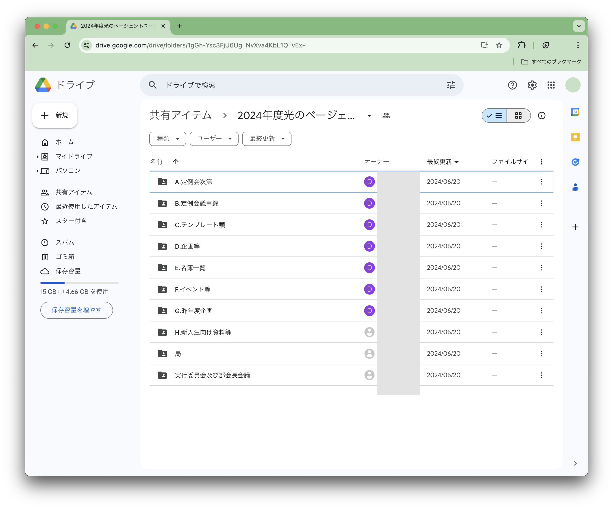
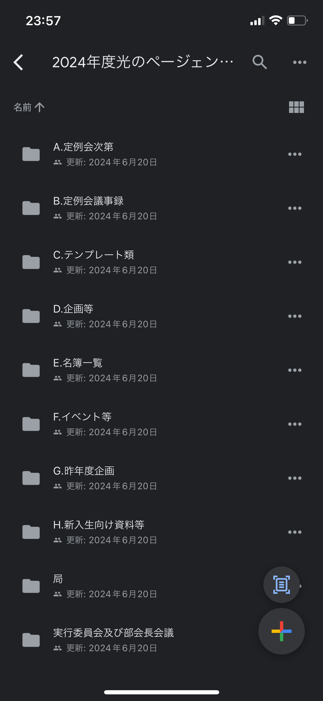
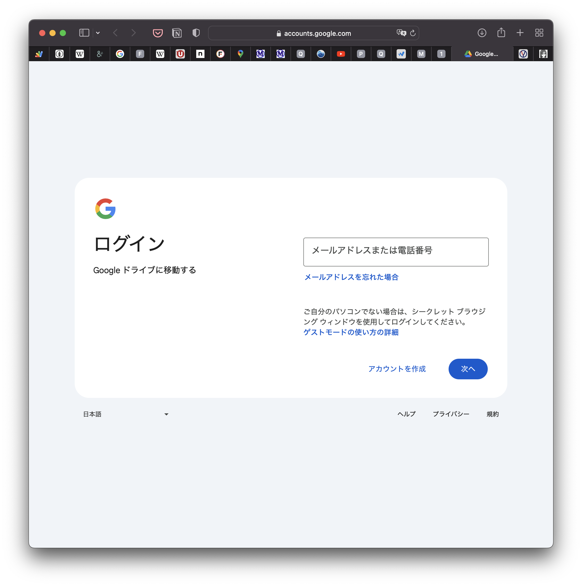
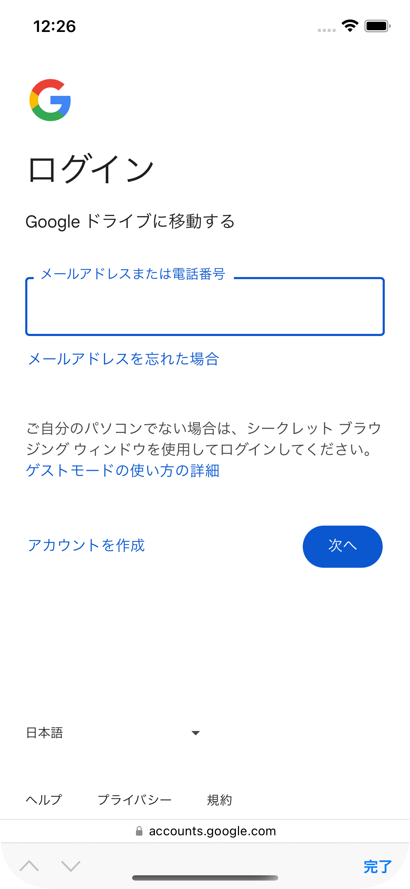
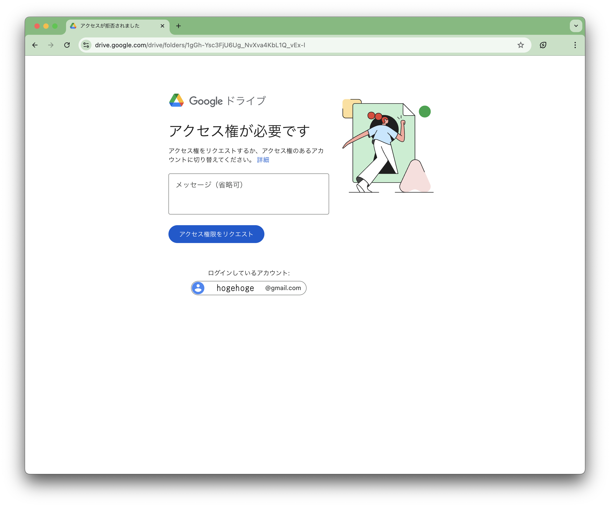
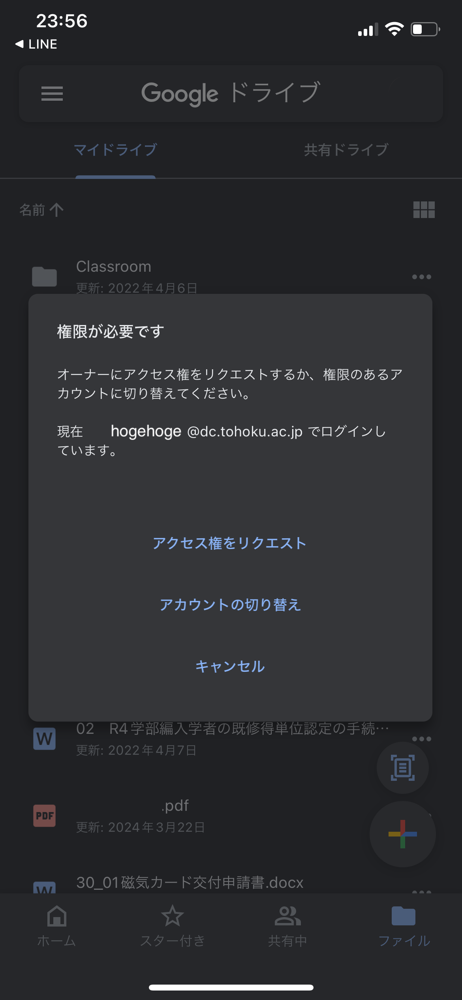
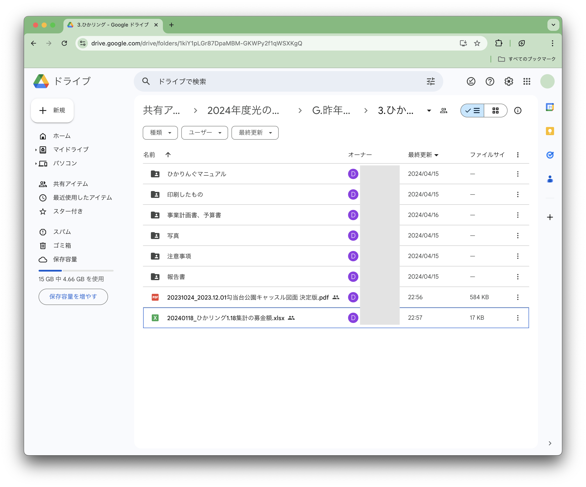

まず最初に（これだけは全員読んで）
光ペ関係で作成したファイルは必ず共有ドライブにアップするようにしましょう！ みんなの成果はみんなが見れるように...！！
ここでは、ユース部会のGoogleドライブの使い方（見方＆アップの仕方）が書いてあります。特に、アップロード時はユース部会独自のルールを設けてます。必ず見てください！！
Google Driveはじめオンラインストレージは大学のゼミ配属や研究室配属時、社会人になってからも使うかも・・・今のうちに慣れておこう☆
ドライブ関係でわかんない時はここを参考にして、見てみましょう！！
Googleドライブの入り方
まずは、Googleドライブに入るところから始めてみましょう。
ドライブに入る
- このリンクから共有ドライブに入る。
-
こんな画面になってればもう入れてる。あとは見たい資料を見る。
- 
- 
成功してる画面 - 上のようにならず、以下のようなログインを求められた場合やアクセス権を求められた場合を求められた場合は続きを参照。
- 
- 
- 
- 
スマホやタブレットの場合、Google Driveのアプリあると便利。多分大学でも使ってるかも。
ログインを求められた場合
アクセス権限を求められた場合
ログインを求められた場合
- ユース部会のGoogle Formに提出した自分のメールアドレスを思い出す。
- そのアドレスでログインする。
- 成功してる画像のようになれば、OK。
アクセス権限を求められた場合
- ユース部会のGoogle Formに提出した自分のメールアドレスを思い出す。
- 画面内の「ログインしているアカウント」or「アカウントの切り替え」から、提出した覚えのあるアドレスのアカウントに切り替える。
- 成功してる画像のようになれば、OK。
それでも入れない場合
デジタル局長に連絡。
ファイルのアップロードについて
ファイルをアップする時には必ず、どのフォルダに何が入ってるか、すぐ分かるようなアップロード・整理を心がけてください。そうしないとどうなるか。。。
- どこに何があるか分からない → 本人不在の時、各種会議で資料を出せない。
- ぐちゃぐちゃ過ぎて、編集して良いのか、そのまま残さなきゃいけないのか、消して良いのかが分からない → 無駄なファイルがどんどん残ってエントロピー爆増し続ける。だるい。
- 引き継ぎの時、学生リーダーたちがめっちゃ苦労する → めっちゃ苦労した。

めっちゃ見づらい・・・
こりゃ嫌ですね。それがルールを決めてやると・・・

引くほど見やすい！！！大感動！！！大感涙！！！
- どこに何があるかめっちゃ分かる → 本人不在の時、各種会議で資料をめっちゃ出せる。
- 整い過ぎて、編集して良いのか、そのまま残さなきゃいけないのか、消して良いのかがめっちゃ分かる → 無駄なファイルがどんどん残ってエントロピー爆増し続けない。だるくない。むしろ気持ちいい。
- 引き継ぎの時、学生リーダーたちがめっちゃ苦労しない → めっちゃ苦労しない will。
めっちゃ感動。それなので、みんなやりましょう。
ここから、Googleドライブにファイルをアップする具体的な手順について書いていきます。分かる人は読まなくていいけど、下の説明で赤の太字で書いてあることは必ず読んで守ってください！！お願いします！！！
アップロードのステップ
ファイルをアップするまで、ファイルはアップされないんです。だからこそ、ファイルをアップしなければならない。
Step 1. アップファイルの準備
- アップロードするファイルを用意する。
- 何を書いたファイルなのか、どんなファイルかを確認する。
- 共有ドライブに入る。
- ファイルを入れるフォルダを選ぶ。
- 次に、ファイルをアップする（Step 2へ）。
アクセス権無いときは、ログインしているアカウントとユース部会に提出したアカウントが同じかどうかを確認。それでも解決しない場合、デジタル局長に連絡。
Step 1.1. 新しくフォルダを作る
- ドライブの画面内の「＋」アイコンから「新しいフォルダ」、フォルダを作る。
- フォルダ名は「サンタ企画予算書」「サンタ企画デザイン案」など、誰が見てもわかりやすい名前にする。
- 次に、ファイルをアップする（Step 2へ）。
Step 2. ファイルアップロード
- 画面内の「＋」アイコンから、アップしたいファイルを選んでアップする。PCの場合、ドラッグアンドドロップでもいける。
- 最後に、ファイル名をつける（Step 3へ）。
Step 3. ファイル名をつける
- アップしたファイルの右端の3つの丸のアイコンをタップし、ファイル名を変更する。
- ファイル名は必ず「日付_ファイルの内容」で統一する。
（必ず徹底して！じゃないとどれが新しいデータで何書いてあるかわかんなくなる！）
「20240803_第1億回定例会次第」など。※ドライブの「最終更新」日時は、移動とかしても日付更新されるので、ここではアテになりません。
- ファイルの内容はひと目で見て分かるようなネーミングにする。
「20240803_俺の今世紀最大の自信作」みたいなのはおもろいけどダメ。
- 同じ日付、同じ内容にってしまう場合は、ファイル名の後ろに数字を付けてバージョン管理をする。
「20240803_サンタ企画素案_1」、「20240803_サンタ企画素案_2」など。
- 終わりンゴ。
（必ず徹底して！じゃないとどれが新しいデータで何書いてあるかわかんなくなる！）
「20240803_第1億回定例会次第」など。※ドライブの「最終更新」日時は、移動とかしても日付更新されるので、ここではアテになりません。
「20240803_俺の今世紀最大の自信作」みたいなのはおもろいけどダメ。
「20240803_サンタ企画素案_1」、「20240803_サンタ企画素案_2」など。
用語の確認
もしコレ読んでてわからない時用の用語集（ﾃﾞﾃﾞｰﾝ）。
コレを読んでいて用語がわからないということは、この文書に登場する用語についてわからないということだ。
| 用語 | 意味 |
|---|---|
| ファイル | パソコンやスマホで作った書類、画像など様々なデータ。pdfファイル(.pdf)、Wordファイル(.docx)、Excelファイル(.xlsx)、パワポファイル(.pptx)、png画像(.png)、jpeg画像(.jpeg)、mp3ファイル(.mp3)、CSVファイル(.csv)、Adobe Illustratorファイル(.ai)など、パソコンにあるデータ全て。 |
| フォルダ | いろんなファイルを入れている入れ物のこと。ディレクトリとか言ったりもする。 |
| ドライブ | 記憶媒体の意味。HDD（Hard Disk Drive）とか、SSD（Solid State Drive）とか。特にここでは、ファイルとフォルダをインターネット上に保管し、複数人で共有できるサービスであるGoogle Driveを指す。 |
| 終わりンゴ | 終結を現す「終わり」にりんごが付いた形式。カワイイ。 |
| ファイルをアップするまで、ファイルはアップされないんです。だからこそ、ファイルをアップしなければならない。 | ファイルをアップしていないからあげた方が良いという意味。tautologyという修辞技法で、現在は小泉構文でまかり通る。 |
| コレを読んでいて用語がわからないということは、この文書に登場する用語についてわからないということだ。 |
不明点・お問い合わせ・ご相談・おしゃべり・お戯れ
ワシ（広報局長）にLINE投げるか突撃して。